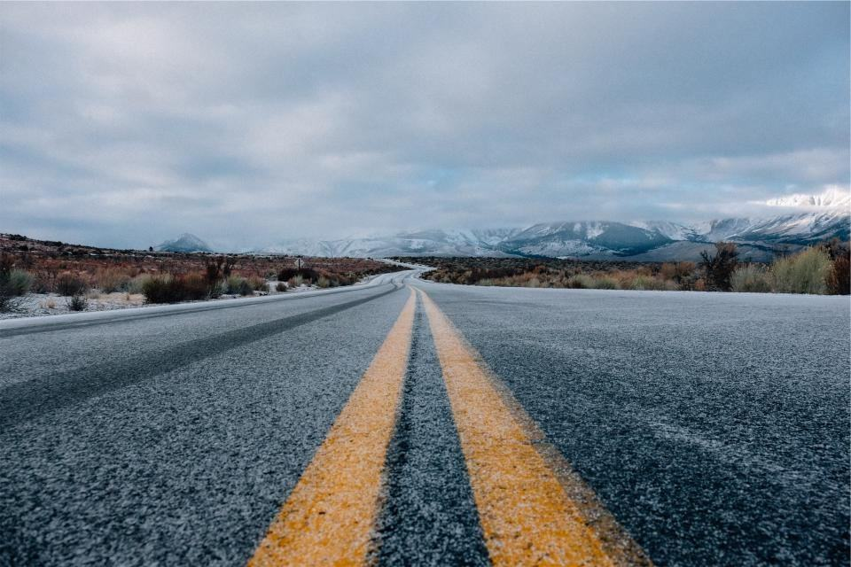
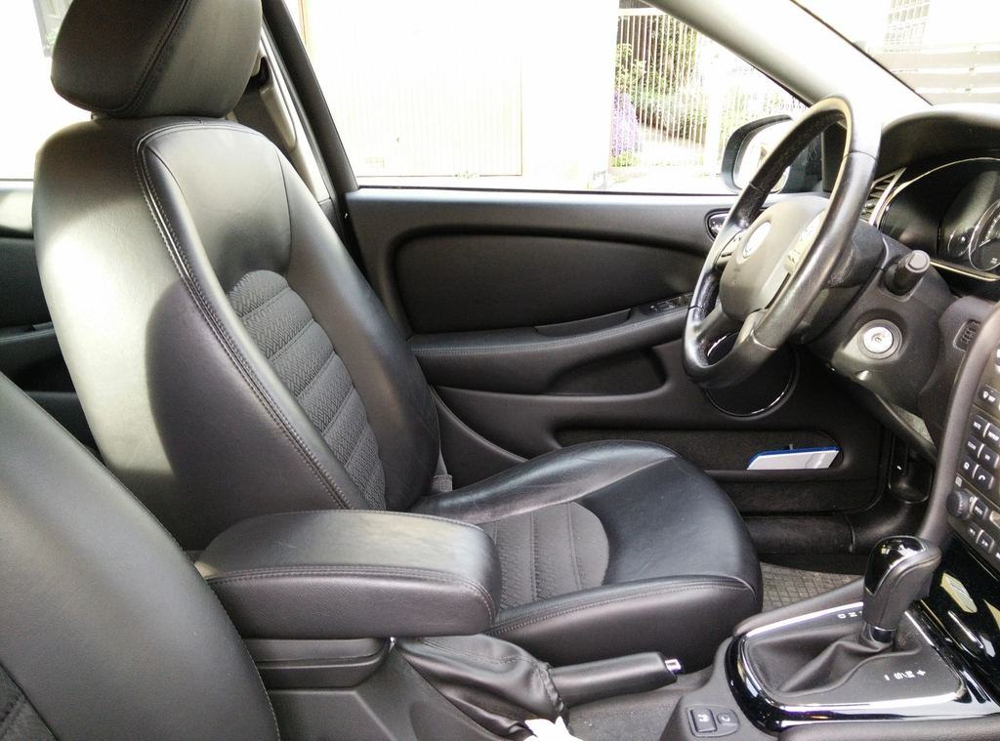

Tjänster
Sedan 2016 leds skolan av Karin Fryxell, tredje generationen. Vi är 16 anställda och utbildar omkring 640 elever om året. Ungefär var tredje elev har en förälder som också tog körkortet hos oss – och några har en farförälder som gjorde det hos Gunnar.
Vilket körkort siktar du på?

Personbil, manuell och automat
Du får en fast trafiklärare från första till sista lektionen. Vi börjar på industrigatorna i Våxnäs och slutar på E18 och i rondellerna vid Bergvik.
Nio Volvo V60 med dubbelkommando, varav fyra automatväxlade.

Handledare och privat övningskörning
De flesta av våra elever övningskör hemma mellan lektionerna. Därför bjuder vi in handledaren till en gemensam lektion efter halva utbildningen, så att ni övar på samma saker.
Introduktionsutbildningen hålls i teorisalen två gånger i veckan.

Riskutbildning
Riskettan håller vi själva i Våxnäs, i grupper om högst 16. Halkbanan kör vi i Kil, där vår lärare sitter med i bilen under hela passet.
Båda delarna gäller i fem år och måste vara klara före körprovet.

Motorcykel
MC-skolan har två lärare och fem motorcyklar i A1-, A2- och A-klass. Säsongen börjar när gruset är sopat i april.
Risk 2 för MC körs på bana i Arvika i maj och augusti.
Från tillstånd till uppkörning
- 1

Körkortstillstånd
Du ansöker hos Transportstyrelsen och går handledarkursen. Birgitta hjälper till om något krånglar.
- 2

Bedömningslektion
Vi provkör 40 minuter i Våxnäs och gör en körplan med ungefärligt antal lektioner.
- 3

Lektioner och risk
Lektioner varannan vecka, övning hemma däremellan och riskutbildningen när du kör säkert i stadstrafik.
- 4

Provlektion och körprov
En provlektion på samma tid som ditt körprov, och sedan lånar du skolans bil till Trafikverket.
Tillstånd och behörigheter
- TrafikskoletillståndTillstånd från Transportstyrelsen att bedriva trafikskola för behörighet A och B.
- RiskutbildningGodkända att hålla riskutbildning del 1 för bil och MC, med certifierade instruktörer.
- Medlem i STRMedlem i Sveriges Trafikutbildares Riksförbund sedan Gunnars tid, 1958.
- TrafiklärarexamenAlla elva lärare har yrkeshögskoleexamen som trafiklärare och går fortbildning varje år.